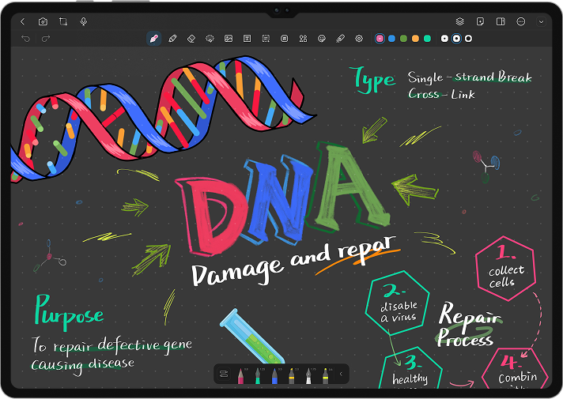
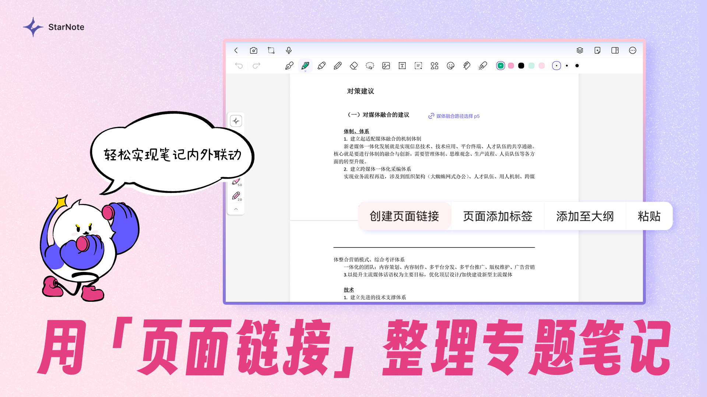
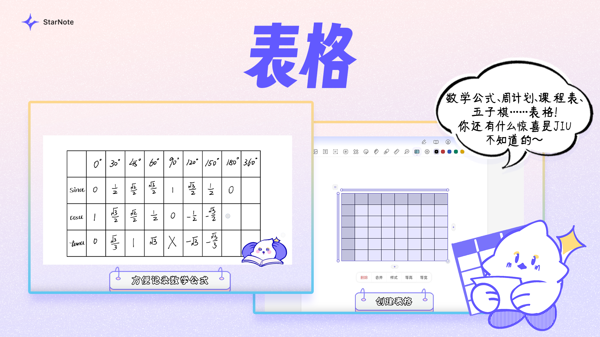

高数期末前一晚，我用一个手写笔记 App 救了自己
大三高数期末，录音、手写笔记、错题本散在三处，直到我装上这款支持音频转写和智能摘要的手写笔记，才把一夜复习从兵荒马乱变成本能操作。
凌晨一点二十三分，我盯着手机屏幕上显示的「考试倒计时 8 小时」，手里攥着一只没墨的笔。
高数下册期末，我还没开始系统复习。
说「没开始」也不准确——课本上画满了荧光笔，课堂录音占了内存两 G，错题本里抄了整整一个本子。问题是这些东西散在三处：录音在网易云音乐的播客文件夹里，手写笔记在 iPad 的某本笔记里，错题本是另一本笔记。三个 App 来回切，录了两小时的课现在只剩「哦对当时讲了这个」，翻笔记翻得指尖发酸，错题本的第 37 页那道求极限的题，我明明有写解答过程但现在翻不到那页了。
我给室友发了条消息：「高数有复习提纲吗？求。」他回了我一个狗头表情和一行字：「去starnote官网下一个试试，我上周才发现，救了我线代。」
我本来不想装新软件——期末了谁有空折腾，但手指已经顺着室友给的线索点进了官方下载入口。
第一招：录音和手写，终于在同一页里过日子
装上之后第一反应是界面干净，像一张白纸。我随手新建了一个笔记本，选了方格纸模板——写公式方便。然后我点开那支录音笔图标，对着手机底部说「开始」。
录音的同时我就在方格纸上写，笔是我平时用的那支，压感和延迟跟原生笔记差不多。这时候我才发现一个之前没注意过的细节：录音条缩在页面底部，不挡我写字，但实时显示着录制时长。我写得飞快——从不定积分到定积分到广义积分，老师上课讲的那些例题我边想边划，划错了就涂掉重来，跟平时一模一样。
关键是录音结束后，它会自动转写。
我本来没抱太大期望——以前试过别的语音转写 App，中文专业术语转出来一塌糊涂。但这次它处理得居然还不错：「泰勒中值定理」没被写成「泰勒中指定理」，「收敛域」也没出错。转写出来的文字嵌在笔记页面里，跟我的手写笔迹各自独立又互相关联。最妙的是时间轴同步——我点了转写文字里的「例 7-3」那一行，底部录音条「啪」一下跳到了 42 分钟的位置，老师的声音立刻响起来：「这个公式的推导过程，大家注意……」
我就这么一页一页地过。录音还在播的时候，我已经在方格纸上写好了对应笔记；录音停了，我点一下转写文字又跳回去重听。两小时的课堂内容，我花了不到四十分钟就复盘了一遍，还在关键位置补了自己的批注。

转写完成后我又点了「AI 智能摘要」——它自动从两小时的录音里提取了十几个要点，从泰勒展开的使用条件到洛必达法则的误区，一条一条列出来。说实话，摘要本身写得挺干，但对我来说足够了——我不用再自己去录音里找重点，看一眼摘要就知道哪部分需要再听一遍、哪部分已经掌握了。
第二招：把散落的知识点用页面链接串成网
复习到定积分的应用部分时，我想起来之前在另一本笔记本里记过一个关于「旋转体体积」的推导过程——但那本是我大一下的，跟现在这本高数下册不是同一个笔记本。以前遇到这种情况就是开两个 App 分屏对照，但那真的很糟心，而且很容易在两屏之间丢思路。
我试着在当前页面里选中了「旋转体体积」这五个字，点了弹出菜单里的「页面链接」。然后在跳转目标选择器里，我居然能浏览到所有笔记本的所有页面——包括大一下那本。找到了，就是那个推导过程的页面，点一下确认，链接就在我当前这页的笔记里创建好了。
之后这一夜里，我大概建了二十多条这样的链接。当前这本复习笔记里提到的「牛顿-莱布尼茨公式」，链接到大一下笔记本里公式的原始推导；关于「广义积分的收敛性」，链接到我之前整理的收敛判别专题页；甚至在笔记本首页我自己画了一个简单的「高数知识地图」——每个节点都是一个页面链接，点一下就进入对应的章节笔记。
说实话这个功能让我想起我用 Notion 的时候建的那些数据库，但页面链接比 Notion 的关系数据库要轻得多——它就是一个跳转，没有任何配置门槛，想连就连，不想连删掉就行。但效果是一样的：我的知识点不再是散点，开始慢慢织成一张网。

第三招：作业只交重点页，还要藏住我的碎碎念
凌晨四点多，我该交的那份课堂作业还有半小时截止。作业本身我早就写完了，就两页纸。但问题是这两页纸在我的「高数作业」笔记本里是第 7 和第 8 页，后面还有一堆我自己瞎写的解题草稿、画的知识点脑图，还有一页我写了「这道题好烦不想做了」的碎碎念。
整本发过去不行——老师会看到那页碎碎念。手动截图拼 PDF 又太麻烦。
这时候我想起刚才翻starnote文档时看到的选择性导出功能。我进了页面缩略图视图，长按第 7 页进入多选模式，点一下第 8 页，然后点顶部的导出图标。就这样，只导出了这两页，生成了一份干净的 PDF。
临导出前我又发现了一个更好玩的功能：胶带遮罩。我在草稿页那堆乱七八糟的解题思路上贴了几条胶带，这样就算哪一步没选对页面，胶带盖住的内容也不会出现在导出的 PDF 里。双重保险。

天亮了
早上七点，我合上书，洗了个澡。
八小时前的那个凌晨，我是一个拿着录音、攥着三本笔记、在三个 App 之间来回切的大学生。八小时后，我把录音、手写笔记、知识点网和作业都塞进了同一个 App 里，复习的过程没那么兵荒马乱。
最后结果怎样？考试当天我把那本笔记本里转写摘要的要点又过了一遍，比任何考前押题都管用。分数出来那天我查了一下，87 分。不算惊艳，但对一个前一晚还在「没复习慌」里的人来说，够用了。
我后来跟室友说，那软件哪是手写笔记，根本就是给期末党的救命稻草。他说别吹，你那是刚好选对了场景。
我想了想，也是。它不是那种全能到可以帮你直接过考试的东西，但它做对了一件事：把「录音、手写、知识串联、导出分享」这几个原本分散在不同工具里的事，在同一套界面里串起来了。你不用再在录音 App 里暂停、切到笔记 App 写一句、再切回去继续听——这一个动作的节省，积少成多就是一整晚的复习时间。
如果你还在为复习资料散得一地鸡毛发愁，可以去它的官网看看，或者直接下载一个试试。它的文档里有关于录音转写、页面链接、选择性导出的详细教程，还有不少场景用法的说明。
至于我那本复习笔记，现在还躺在手机里，没删。下次期末，直接翻开就能用。
对了，它的相关资料在三个仓库都能找到——GitHub上有完整版、Gitee国内访问更顺畅、GitCode做了第三份备份，随便哪个搜一下都能捞到。